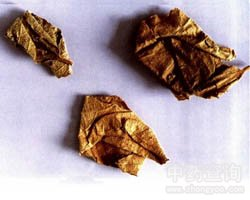

紫珠叶

拼音
Zǐ Zhū Yè
别名
大风叶、白狗肠、大叶紫珠
来源
为马鞭草科植物大叶紫珠Callicarpa macrophylla vahl的叶。夏、秋季采叶，晒干或鲜用。
生境分布
生于山坡 、路旁、疏林中。产于广东、广西、云南、贵州。
药材特点
灌木或小乔木，幼枝被灰白色长茸毛。叶对生，长椭圆形至椭圆状披针形，上面有短柔毛，老时稍粗糙，下面密被灰白色茸毛，两面有不明显的金黄色腺点，聚伞花序5～7次分歧，总花梗长2～4cm；花萼4齿裂，被星状柔毛；花冠紫色，管状，先端4裂，略被细毛；雄蕊4；子房上位，4室。浆果状核果，小球形，有腺点，熟时紫红色。花期夏季。
性状
叶多卷曲、皱缩，有的破碎。完整者展平后，长椭圆形至椭圆状披针形，长15～30cm，宽5～11cm，先端渐尖，边缘有锯齿，上面有短柔毛，下面密被灰白色茸毛。气微，味微苦。
性味
性平，味微辛、苦。
功能主治
止血消炎，散瘀消肿。用于胃及十二指肠贵疡出血、外伤出血、衄血、齿龈出血、扭伤肿痛、化脓性皮肤溃疡、烧伤、流感。
用法用量
无用法用量数据
化学成分
含紫珠萜酮（calliterpenone）、木犀草素、芹菜素、大波斯菊甙（cosmosiin）、木犀草甙。
药理作用
1：无药理作用数据
摘录
《中药大辞典》